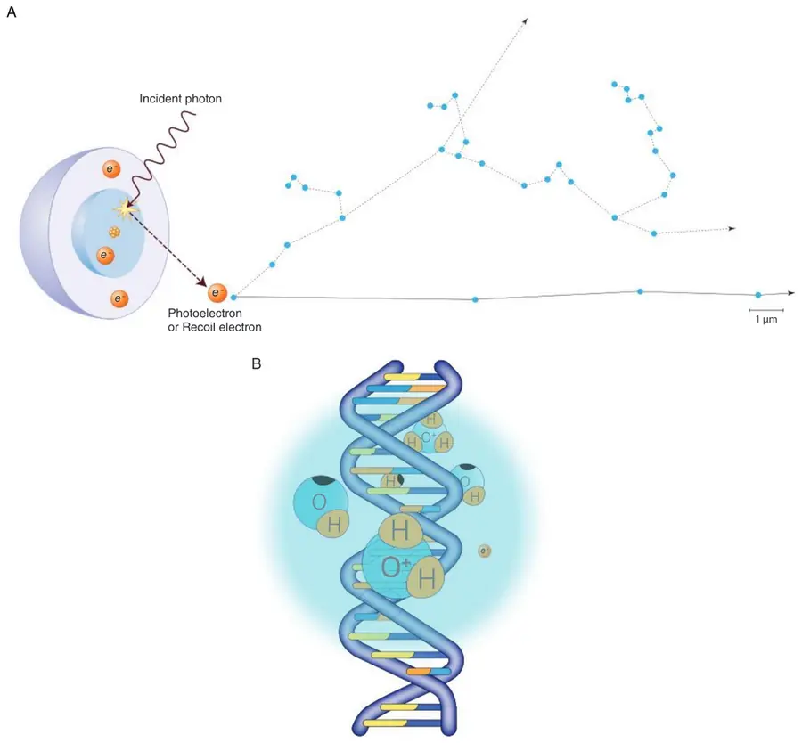
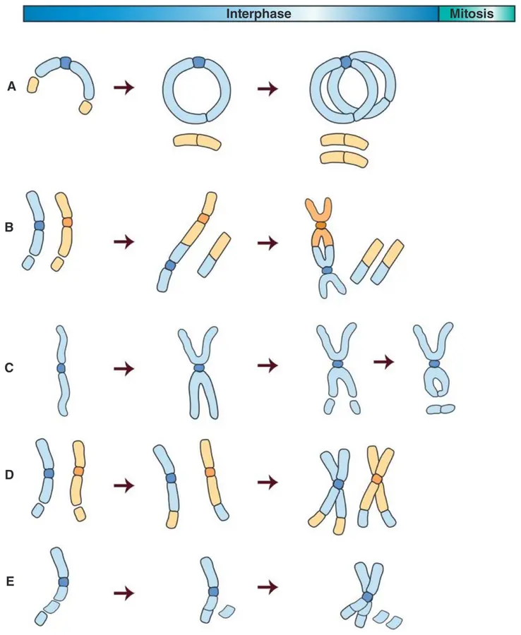

نسخه استخراجشده؛ ترجمه یا تأیید علمی انجام نشده است. وضعیت: captured
مقیاس زمانی کل ماجرا را نخست ببین — این چهارچوب همهچیز را مرتب میکند:

و الگوی رسوب انرژی با نوع پرتو فرق میکند: «ذرات باردار پرسرعت — آلفا، بتا، الکترون و پروتون — انتقال خطی انرژی (LET) بالایی دارند و بیشتر انرژیشان را در فاصلهای کوتاه منتقل میکنند. این ذرات مسیرهای متراکم یونساز دارند و فاصلههای کوتاهی در بافت نفوذ میکنند.» در برابر: «پرتو ایکس و گاما پرتوهای کمLETاند. انرژی کمتری بر واحد طول مسیر میگذارند و بنابراین عمیقتر در بافت نفوذ میکنند.»
و هدف نهایی چیست؟ «بروزهای زیستی آسیب پرتو یونساز عمدتاً پیامد آسیب به DNA سلولاند.» و این آسیب از دو راه میآید:
«فوتون مستقیماً با DNA برهمکنش میکند و آن را یونیزه میکند. الکترونهای آزاد تولیدشده از برهمکنش یونیزاسیون — یعنی الکترونهای ثانویه — نیز میتوانند مستقیماً با DNA برهمکنش کنند.»
و سازوکارش: «مولکولهای DNA از فوتون فرودی یا الکترون ثانویه انرژی جذب میکنند تا بازها یا اسکلت قند-فسفات را یونیزه کنند و رادیکالهای ناپایدار ظرف ۱۰⁻¹⁰ ثانیه بسازند. این رادیکالهای آزاد بهسرعت با تفکیک (شکستن) یا اتصال متقابل (پیوستن دو مولکول) به آرایش پایدار برمیگردند و تغییرات شیمیایی و فیزیکی در DNA میسازند.»
و سهم عددیاش: «کنشهای مستقیم با پرتوهای پرLET بر کنشهای غیرمستقیم غالباند، ولی با پرتوهای کمLET مانند ایکس و گاما کمفراوانترند. با پرتو کمLET، تقریباً ۳۰ درصد آسیب DNA از کنشهای مستقیم میآید.»
«برهمکنش اولیهی فوتون یا الکترون ثانویه با یک مولکول آب رخ میدهد» — که «تقریباً ۷۰ درصد جرم یک سلول پستانداران» را میسازد. و «کنشهای غیرمستقیم تقریباً ۷۰ درصد آسیب DNA ناشی از پرتو ایکس را تشکیل میدهند».
و این زنجیره رادیولیز آب نام دارد: «برهمکنش اولیهی یک فوتون ایکس با آب یک مولکول آب یونیزه (H₂O⁺) بههمراه یک الکترون بیرونرانده، یا یک مولکول آب برانگیخته (H₂O*) میدهد. واکنشهای یون-آب یونهای هیدرونیوم (H₃O⁺)، رادیکالهای هیدروکسیل (OH•)، و الکترونهای آبی میسازند. مولکولهای آب برانگیخته به رادیکالهای هیدروژن (H•) و هیدروکسیل (OH•) تفکیک میشوند.»
و نقش اکسیژن — نکتهای که کمتر به آن توجه میشود: «حضور اکسیژن محلول، چنانکه در بافتهای طبیعی هست، گونههای رادیکال آزاد ساختهشده در رادیولیز آب را بهطور معناداری تغییر میدهد. در حضور اکسیژن، رادیکالهای هیدروپروکسیل (HO₂•) و پراکسید هیدروژن ساخته میشوند که به آسیب DNA کمک میکنند.»
و رادیکالهای آزاد چیستند؟ «اتمها یا مولکولهایی که یک الکترون ظرفیت جفتنشده دارند، بینهایت واکنشپذیرند، و عمر بسیار کوتاهی دارند. رادیکالهای آزاد نقش غالبی در آسیب زیستی ناشی از پرتو ایکس بازی میکنند.»
و دو عدد پایانی این بخش که باید حفظ شوند:
چهار نوع آسیب DNA — و توزیع عددیشان که ممکن است غافلگیرت کند: «کنشهای مستقیم و غیرمستقیم به آسیب باز، شکست تکرشته و دورشته، و اتصالات متقابل درونDNA و DNA-پروتئین میانجامند.»

ولی چرا شکست دورشته با وجود نادر بودن چنین مهم است؟ «هرچند کمفراوان، شکست دورشتهی DNA شکل بینهایت مهمی از آسیب است، چون باور میرود هم کشتن سلول و هم تومورزایی را میسازد.» و ویژگیاش: «شکستهای رشته روی رشتههای مقابل و با فاصلهی نزدیکاند.»
و مفهوم ضایعهی خوشهای: «وقتی دو یا چند آسیب باز یا شکست رشته درون دو دور مارپیچ DNA رخ دهند، آسیب ضایعهی خوشهای نامیده میشود. این ضایعات ترمیمشان دشوارتر است و گمان میرود بیشتر جهشها و بازآراییهای کروموزومی ناشی از پرتو کمLET را بسازند.»
و تفاوت کمLET و پرLET اینجا معنا پیدا میکند: «در برابر پرتو کمLET که آسیب پراکنده توزیع میشود، پرتوهای پرLET مسیرهای متراکم یونساز دارند و شکستهای دورشته و ضایعات خوشهای بیشتری میسازند. بنابراین پرتوهای پرLET در کشتن سلول کارآمدترند.»
و یک مفهوم فیزیکی زیبا: «تقریباً ۹۵ درصد انرژی فوتون ایکس بهصورت اسپور رسوب میکند — رسوب ۱۰۰ الکترونولت درون قطر ۴ نانومتری، که سه جفت یون یا رادیکال میدهد.»
ولی این اسپورها از هم دورند: «اسپورهای منفرد از نظر فیزیکی از هم جداند و پرتو ایکس یک الگوی مسیر کمتراکم یونساز دارد. بنابراین آسیب DNA از پرتو ایکس عمدتاً آسیب باز است، و شکستهای تکرشته و دورشته نادرند.»
و اکنون نکتهی کلیدی: «وقتی یک اسپور بر مارپیچ دوگانهی ۲ نانومتری DNA همپوشان شود، رسوب انرژی از یک اسپور میتواند یک ضایعهی خوشهای بسازد. با پرتو ایکس، چنین ضایعاتی تقریباً سه برابر فراوانتر از شکستهای دورشتهاند.»
«سلولهای پستانداران سازوکارهای پیچیدهای برای پاسخ به انواع خاص آسیب DNA تکامل دادهاند.» و نگاشت آسیب به مسیر ترمیم را حفظ کن:
| آسیب DNA | سازوکار ترمیم |
|---|---|
| آسیب باز | ترمیم برشی باز |
| شکست تکرشته | ترمیم برشی باز |
| شکست دورشته | نوترکیبی همولوگ و اتصال انتهایی ناهمولوگ |
| دیمر پیریمیدینی (اتصال متقابل درونDNA میان دو نوکلئوتید سیتوزین یا تیمین مجاور، ناشی از پرتو فرابنفش) | ترمیم برشی نوکلئوتید |
و دو نکتهی عملکردی دربارهی ترمیم: «ترمیم برشی باز و نوکلئوتید بیشتر آسیبهای باز، شکستهای تکرشته، و اتصالات متقابل را با استفاده از رشتهی مقابل بهعنوان الگو کارآمد ترمیم میکنند. خطاها حین ترمیم میتوانند به جهش DNA بینجامند.»
و یک عدد مهم دربارهی شکست دورشته: «اتصال انتهایی ناهمولوگ یک سازوکار خطاپذیر است. در سلولهای انسانی، اتصال انتهایی ناهمولوگ ۸۰ درصد شکستهای دورشته را ترمیم میکند.» — یعنی سازوکار غالب، همان سازوکار خطاپذیر است.
زمان پرتوگیری نوع انحراف را تعیین میکند: اگر سلول پیش از همانندسازی (در G1 یا اوایل S) پرتو بگیرد، شکست همانندسازی میشود و هر دو کروماتید خواهر آن را حمل میکنند؛ این انحراف کروموزومی است. شکست پس از همانندسازی تنها یک کروماتید خواهر را درگیر میکند و انحراف کروماتیدی میسازد. فراوانی انحرافها بهطور کلی متناسب با دوز است.
برخی انحرافها کشندهاند — کروموزوم حلقوی، کروموزوم دایسنتریک و پل آنافازی — و سلول را حین میتوز میکشند. برخی غیرکشندهاند — ترانسلوکیشن و دلیشن کوچک — و اگر انکوژن یا ژن سرکوبگر تومور را درگیر کنند، رشد سلول را بینظم میکنند و تومورزایی را آغاز میکنند. سلولها در G2 و میتوز پرتوحساسترین، در G1 کمحساستر، و در بخش پایانی S کمحساستریناند.
مرگ سلولی وابسته به دوز است. اثرات کوتاهمدت در ساعتها تا روزها از کاهش شمار سلولهای بالغ بافت پدید میآیند؛ اثرات بلندمدت در ماهها و سالها، عمدتاً از مرگ سلولهای همانندساز، جایگزینی آنها با بافت فیبروز و آسیب عروق ظریف.
مرگ میتوزی شیوهی غالب کشتن سلول با پرتو است و از انحرافهای کشنده میآید. حساسیت سلول به آن را قانون برگونیه و تریبوندو بیان میکند: پرتوحساسی متناسب با نرخ میتوزی و معکوس با درجهی تمایز است؛
پس سلولهای با تقسیم سریع حساسترند و سلولهای تخصصیافتهی پسمیتوزی پرتومقاومترین. ردهبندی کازارت بر همین پایه است: از سلولهای وجتاتیو اینترمیتوتیک (لایهی بازال مخاط دهان، سلولهای بنیادی مغز استخوان) تا سلولهای پسمیتوزی ثابت (نورون، عضله).
دو استثنا: لنفوسیتها، پرتوحساسترین سلولهای پستانداران، و آسینی سروزی غدد بزاقی که با وجود تقسیم کند بهشدت پرتوحساساند. در این سلولها آپوپتوز شیوهی غالب مرگ است: به میتوز نیاز ندارد، سلول در اینترفاز و ظرف چند ساعت میمیرد، و ژن سرکوبگر تومور p53 میانجی مهم آن است.